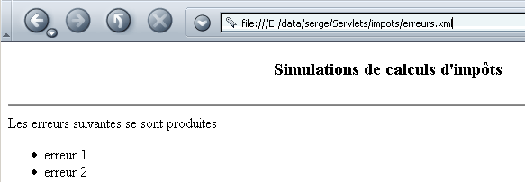
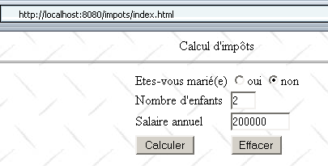
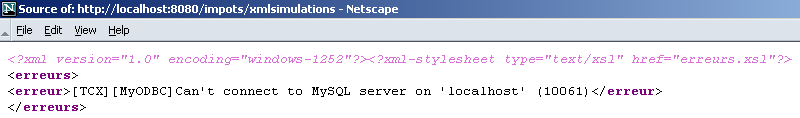
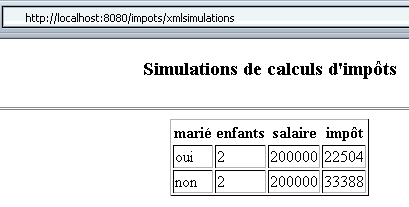
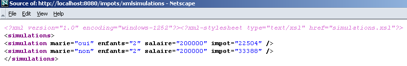
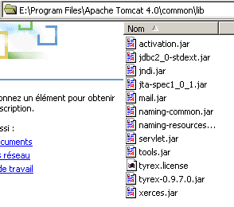
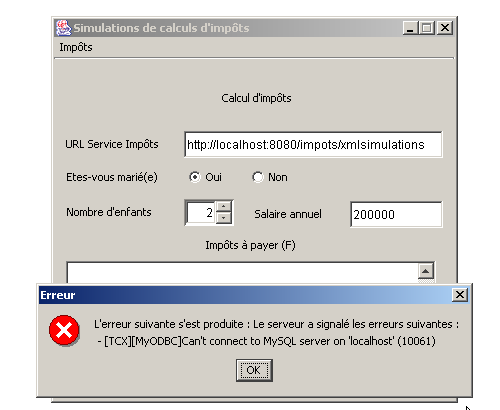
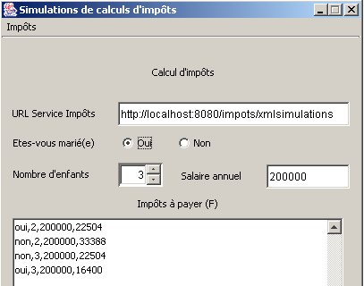

6. XML und JAVA
In diesem Kapitel stellen wir die Verwendung von XML-Dokumenten mit Java vor. Dies geschieht im Kontext der im vorigen Kapitel behandelten Steueranwendung.
6.1. XML-Dateien und XSL-Stylesheets
Betrachten wir die folgende Datei XML simulations.xml, die das Ergebnis von Simulationen zur Steuerberechnung darstellen könnte:
<?xml version="1.0" encoding="ISO-8859-1"?>
<simulations>
<simulation marie="oui" enfants="2" salaire="200000" impot="22504"/>
<simulation marie="non" enfants="2" salaire="200000" impot="33388"/>
</simulations>
Wenn man dies mit IE 6 anzeigt, erhält man folgendes Ergebnis:

IE6 erkennt, dass es sich um eine Datei XML handelt (dank der Dateiendung .xml), und formatiert sie auf seine eigene Weise. Mit Netscape erhält man eine leere Seite. Betrachtet man jedoch den Quellcode (Ansicht/Quelltext), so findet man tatsächlich die ursprüngliche Datei XML:

Warum zeigt Netscape nichts an? Weil es ein Stylesheet benötigt, das ihm vorschreibt, wie die Datei „XML“ in die Datei „HTML“ umgewandelt werden muss, die es dann anzeigen kann. Nun hat IE 6 ein Standard-Stylesheet, während die Datei XML keines enthält, was hier der Fall war.
Es gibt eine Sprache namens XSL (eXtended StyleSheet Language), mit der sich die erforderlichen Umwandlungen beschreiben lassen, um eine XML-Datei in eine beliebige Textdatei umzuwandeln. XSL ermöglicht die Verwendung zahlreicher Anweisungen und ähnelt stark den Programmiersprachen. Wir werden hier nicht näher darauf eingehen, da dies mehrere Dutzend Seiten in Anspruch nehmen würde. Wir werden lediglich zwei Beispiele für XSL-Stylesheets beschreiben. Das erste dient dazu, die Datei XML simulations.xml in den Code HTML umzuwandeln. Dieses wird so geändert, dass es auf das Stylesheet verweist, das die Browser verwenden können, um es in das Dokument HTML umzuwandeln, das sie dann anzeigen können:
<?xml version="1.0" encoding="ISO-8859-1" ?>
<?xml-stylesheet type="text/xsl" href="simulations.xsl"?>
<simulations>
<simulation marie="oui" enfants="2" salaire="200000" impot="22504"/>
<simulation marie="non" enfants="2" salaire="200000" impot="33388"/>
</simulations>
Die Bestellung XML
bezeichnet die Datei simulations.xsl als Stylesheet (xml-stylesheet) vom Typ text/xsl c.a.d. Eine Textdatei, die den Code XSL enthält. Dieses Stylesheet wird von Browsern verwendet, um den Text XML in ein Dokument HTML umzuwandeln. Hier ist das Ergebnis, das mit Netscape 7 beim Laden der Datei XML simulations.xml erzielt wird:

Wenn wir uns den Quellcode des Dokuments ansehen (Ansicht/Quelltext), finden wir das ursprüngliche Dokument XML vor und nicht das angezeigte Dokument HTML:

Netscape hat das Stylesheet simulations.xsl verwendet, um das oben genannte Dokument XML in das anzeigbare Dokument HTML umzuwandeln. Nun ist es an der Zeit, einen Blick auf den Inhalt dieses Stylesheets zu werfen:
<?xml version="1.0" encoding="ISO-8859-1"?>
<xsl:stylesheet version="1.0" xmlns:xsl="http://www.w3.org/1999/XSL/Transform">
<xsl:output method="html" indent="yes"/>
<xsl:template match="/">
<html>
<head>
<title>Simulations de calculs d'impôts</title>
</head>
<body>
<center>
<h3>Simulations de calculs d'impôts</h3>
<hr/>
<table border="1">
<th>marié</th><th>enfants</th><th>salaire</th><th>impôt</th>
<xsl:apply-templates select="/simulations/simulation"/>
</table>
</center>
</body>
</html>
</xsl:template>
<xsl:template match="simulation">
<tr>
<td><xsl:value-of select="@marie"/></td>
<td><xsl:value-of select="@enfants"/></td>
<td><xsl:value-of select="@salaire"/></td>
<td><xsl:value-of select="@impot"/></td>
</tr>
</xsl:template>
</xsl:stylesheet>
- Ein Stylesheet XSL ist eine XML-Datei und folgt daher deren Regeln. Es muss unter anderem „wohlgeformt“ sein, d. h., jeder geöffnete Tag muss geschlossen werden.
- Die Datei beginnt mit zwei Befehlen XML, die in jedem Stylesheet XSL beibehalten werden können:
<?xml version="1.0" encoding="ISO-8859-1"?>
<xsl:stylesheet version="1.0" xmlns:xsl="http://www.w3.org/1999/XSL/Transform">
Das Attribut encoding="ISO-8859-1" ermöglicht die Verwendung von Zeichen mit Akzenten im Stylesheet.
- Das Tag <xsl:output method="html" indent="yes"/> weist den Interpreter XSL an, „eingrücktes“ HTML zu erzeugen.
- Das Tag <xsl:template match="Element"> dient dazu, das Element des XML-Dokuments zu definieren, auf das die Anweisungen angewendet werden sollen, die sich zwischen <xsl:template ...> und </xsl:template> befinden.
Im obigen Beispiel bezeichnet das Element „/“ die Wurzel des Dokuments. Das bedeutet, dass, sobald der Anfang des Dokuments XML erreicht wird, die Befehle XSL, die sich zwischen den beiden Tags befinden, ausgeführt werden.
- Alles, was kein Tag XSL ist, wird unverändert in den Ausgabestrom übernommen. Die Tags XSL werden ausgeführt. Einige davon erzeugen ein Ergebnis, das in den Ausgabestrom übernommen wird. Betrachten wir das folgende Beispiel:
<xsl:template match="/">
<html>
<head>
<title>Simulations de calculs d'impôts</title>
</head>
<body>
<center>
<h3>Simulations de calculs d'impôts</h3>
<hr/>
<table border="1">
<th>marié</th><th>enfants</th><th>salaire</th><th>impôt</th>
<xsl:apply-templates select="/simulations/simulation"/>
</table>
</center>
</body>
</html>
</xsl:template>
Zur Erinnerung: Das analysierte Dokument XML lautet wie folgt:
<?xml version="1.0" encoding="ISO-8859-1"?>
<simulations>
<simulation marie="oui" enfants="2" salaire="200000" impot="22504"/>
<simulation marie="non" enfants="2" salaire="200000" impot="33388"/>
</simulations>
Gleich zu Beginn des analysierten Dokuments XML (match="/") gibt der Interpreter XSL folgenden Text aus
<html>
<head>
<title>Simulations de calculs d'impôts</title>
</head>
<body>
<center>
<h3>Simulations de calculs d'impôts</h3>
<hr>
<table border="1">
<th>marié</th><th>enfants</th><th>salaire</th><th>impôt</th>
Es ist zu beachten, dass im Ausgangstext <hr/> und nicht <hr> stand. Im Ausgangstext konnte man nicht <hr> schreiben, da dies zwar ein gültiges HTML-Tag, aber ein ungültiges XML-Tag ist. Wir haben es hier jedoch mit einem XML-Text zu tun, der „wohlgeformt“ sein muss, d. h., dass jedes Tag geschlossen werden muss. Man schreibt also <hr/>, und da man <xsl:output text="html ..."> geschrieben hat, wandelt der XSL-Interpreter den Text <hr/> in <hr> um. Hinter diesem Text folgt dann der durch den Befehl XSL erzeugte Text:
Wir werden später sehen, um welchen Text es sich dabei handelt. Schließlich fügt der Interpreter den Text hinzu:
Der Befehl <xsl:apply-templates select="/simulations/simulation"/> fordert die Ausführung der „Vorlage“ (Template) des Elements /simulations/simulation an. Sie wird jedes Mal ausgeführt, wenn der Interpreter XSL im analysierten Text XML ein Tag <simulation>..</simulations> oder <simulation/> innerhalb eines Tags <simulations>..</simulations> findet. Beim Auftreten des Tags <simulation> führt der Interpreter die Anweisungen der folgenden Vorlage aus:
<xsl:template match="simulation">
<tr>
<td><xsl:value-of select="@marie"/></td>
<td><xsl:value-of select="@enfants"/></td>
<td><xsl:value-of select="@salaire"/></td>
<td><xsl:value-of select="@impot"/></td>
</tr>
</xsl:template>
Betrachten wir die folgenden Zeilen XML:
Die Zeile <simulation ..> entspricht der Vorlage der Anweisung XSL <xsl:apply-templates select="/simulations/simulation>". Der Interpreter XSL wird daher versuchen, die Anweisungen, die dieser Vorlage entsprechen, darauf anzuwenden. Er findet die Vorlage <xsl:template match="simulation"> und führt sie aus. Zur Erinnerung: Was kein Befehl XSL ist, wird vom Interpreter XSL unverändert übernommen, während die Befehle XSL durch das Ergebnis ihrer Ausführung ersetzt werden. Die Anweisung XSL <xsl:value-of select="@champ"/> wird somit durch den Wert des Attributs „champ“ des analysierten Knotens (hier ein Knoten <simulation>) ersetzt. Die Analyse der vorhergehenden Zeile XML führt zu folgendem Ergebnis:
XSL | Ausgabe |
<tr><td> | <tr><td> |
<xsl:value-of select="@marie"/> | ja |
</td><td> | </td><td> |
<xsl:value-of select="@enfants"/> | 2 |
</td><td> | </td><td> |
<xsl:value-of select="@salaire"/> | 200000 |
</td><td> | </td><td> |
<xsl:value-of select="@impot"/> | 22504 |
</td></tr> | </td></tr> |
Insgesamt die Zeile XML
wird in die Zeile HTML umgewandelt:
All diese Erklärungen sind zwar etwas rudimentär, aber dem Leser sollte nun klar sein, dass der folgende Text „XML“:
<?xml version="1.0" encoding="ISO-8859-1"?>
<?xml-stylesheet type="text/xsl" href="simulations.xsl"?>
<simulations>
<simulation marie="oui" enfants="2" salaire="200000" impot="22504"/>
<simulation marie="non" enfants="2" salaire="200000" impot="33388"/>
</simulations>
zusammen mit dem folgenden Stylesheet XSL simulations.xsl:
<?xml version="1.0" encoding="ISO-8859-1"?>
<xsl:stylesheet version="1.0" xmlns:xsl="http://www.w3.org/1999/XSL/Transform">
<xsl:output method="html" indent="yes"/>
<xsl:template match="/">
<html>
<head>
<title>Simulations de calculs d'impôts</title>
</head>
<body>
<center>
<h3>Simulations de calculs d'impôts</h3>
<hr/>
<table border="1">
<th>marié</th><th>enfants</th><th>salaire</th><th>impôt</th>
<xsl:apply-templates select="/simulations/simulation"/>
</table>
</center>
</body>
</html>
</xsl:template>
<xsl:template match="simulation">
<tr>
<td><xsl:value-of select="@marie"/></td>
<td><xsl:value-of select="@enfants"/></td>
<td><xsl:value-of select="@salaire"/></td>
<td><xsl:value-of select="@impot"/></td>
</tr>
</xsl:template>
</xsl:stylesheet>
erzeugt den folgenden Text: HTML:
<html>
<head>
<title>Simulations de calculs d'impôts</title>
</head>
<body>
<center>
<h3>Simulations de calculs d'impots</h3>
<hr>
<table border="1">
<th>marié</th><th>enfants</th><th>salaire</th><th>impôt</th>
<tr>
<td>oui</td><td>2</td><td>200000</td><td>22504</td>
</tr>
<tr>
<td>non</td><td>2</td><td>200000</td><td>33388</td>
</tr>
</table>
</center>
</body>
</html>
Die Datei XML simulations.xml zusammen mit dem Stylesheet simulations.xsl wird von einem aktuellen Browser (hier Netscape 7) wie folgt angezeigt:
6.2. Steueranwendung: Version 6
6.2.1. Die Dateien XML und die Stylesheets XSL der Steueranwendung
Kehren wir zur Webanwendung „Steuern“ zurück und passen wir sie so an, dass die Antwort an die Clients im Format XML statt im Format HTML erfolgt. Diese Antwort im Format XML wird von einem Stylesheet im Format XSL begleitet, damit die Browser sie anzeigen können. Im vorigen Absatz haben wir Folgendes vorgestellt:
- die Datei simulations.xml, die den Prototyp einer Antwort XML mit simulierten Steuerberechnungen darstellt
- die Datei simulations.xsl, die das Stylesheet XSL darstellt, das dieser Antwort XML beigefügt wird
Wir müssen auch den Fall einer Antwort mit Fehlern berücksichtigen. Der Prototyp der Antwort „XML“ lautet in diesem Fall wie folgt:
<?xml version="1.0" encoding="windows-1252"?>
<?xml-stylesheet type="text/xsl" href="erreurs.xsl"?>
<erreurs>
<erreur>erreur 1</erreur>
<erreur>erreur 2</erreur>
</erreurs>
Das Stylesheet erreurs.xsl, mit dem dieses Dokument XML in einem Browser angezeigt werden kann, sieht wie folgt aus:
<?xml version="1.0" encoding="windows-1252"?>
<xsl:stylesheet version="1.0" xmlns:xsl="http://www.w3.org/1999/XSL/Transform">
<xsl:output method="html" indent="yes"/>
<xsl:template match="/">
<html>
<head>
<title>Simulations de calculs d'impôts</title>
</head>
<body>
<center>
<h3>Simulations de calculs d'impôts</h3>
</center>
<hr/>
Les erreurs suivantes se sont produites :
<ul>
<xsl:apply-templates select="/erreurs/erreur"/>
</ul>
</body>
</html>
</xsl:template>
<xsl:template match="erreur">
<li><xsl:value-of select="."/></li>
</xsl:template>
</xsl:stylesheet>
Dieses Stylesheet führt einen bisher noch nicht vorkommenden Befehl XSL ein: <xsl:value-of select="."/>. Dieser Befehl gibt den Wert des analysierten Knotens aus, in diesem Fall einen Knoten <erreur>texte</erreur>. Der Wert dieses Knotens ist der Text zwischen dem öffnenden und dem schließenden Tag, hier texte.
Der Code erreurs.xml wird durch das Stylesheet erreurs.xsl in das folgende Dokument HTML umgewandelt:
<html>
<head>
<title>Simulations de calculs d'impots</title>
</head>
<body>
<center>
<h3>Simulations de calculs d'impots</h3>
</center>
<hr>
Les erreurs suivantes se sont produites :
<ul>
<li>erreur 1</li>
<li>erreur 2</li>
</ul>
</body>
</html>
Die Datei „erreurs.xml“ wird zusammen mit ihrem Stylesheet von einem Browser wie folgt angezeigt:

6.2.2. Das Servlet „xmlsimulations“
Wir erstellen eine Datei „index.html“ und legen sie im Verzeichnis der Anwendung „impots“ ab. Die angezeigte Seite sieht wie folgt aus:

Dieses Dokument „HTML“ ist ein statisches Dokument. Sein Code lautet wie folgt:
<html>
<head>
<title>impots</title>
<script language="JavaScript" type="text/javascript">
function effacer(){
// Formular zurücksetzen
with(document.frmImpots){
optMarie[0].checked=false;
optMarie[1].checked=true;
txtEnfants.value="";
txtSalaire.value="";
txtImpots.value="";
}//mit
}//Löschen
function calculer(){
// Überprüfung der Parameter vor dem Senden an den Server
with(document.frmImpots){
//Anzahl der Kinder
champs=/^\s*(\d+)\s*$/.exec(txtEnfants.value);
if(champs==null){
// Das Formular wurde nicht überprüft
alert("Le nombre d'enfants n'a pas été donné ou est incorrect");
nbEnfants.focus();
return;
}//if
//Gehalt
champs=/^\s*(\d+)\s*$/.exec(txtSalaire.value);
if(champs==null){
// Das Modell wurde nicht überprüft
alert("Le salaire n'a pas été donné ou est incorrect");
salaire.focus();
return;
}//wenn
// Alles in Ordnung – wird gesendet
submit();
}//mit
}//berechnen
</script>
</head>
<body background="/impots/images/standard.jpg">
<center>
Calcul d'impôts
<hr>
<form name="frmImpots" action="/impots/xmlsimulations" method="POST">
<table>
<tr>
<td>Etes-vous marié(e)</td>
<td>
<input type="radio" name="optMarie" value="oui">oui
<input type="radio" name="optMarie" value="non" checked>non
</td>
</tr>
<tr>
<td>Nombre d'enfants</td>
<td><input type="text" size="3" name="txtEnfants" value=""></td>
</tr>
<tr>
<td>Salaire annuel</td>
<td><input type="text" size="10" name="txtSalaire" value=""></td>
</tr>
<tr></tr>
<tr>
<td><input type="button" value="Calculer" onclick="calculer()"></td>
<td><input type="button" value="Effacer" onclick="effacer()"></td>
</tr>
</table>
</form>
</center>
</body>
</html>
Es ist zu beachten, dass die Daten des Formulars an URL /impots/xmlsimulations gesendet werden. Bei dieser Anwendung handelt es sich um ein Java-Servlet, das in der Datei web.xml der Anwendung impots wie folgt konfiguriert ist:
<?xml version="1.0" encoding="ISO-8859-1"?>
<!DOCTYPE web-app
PUBLIC "-//Sun Microsystems, Inc.//DTD Web Application 2.3//EN"
"http://java.sun.com/dtd/web-app_2_3.dtd">
<web-app>
...........
<servlet>
<servlet-name>xmlsimulations</servlet-name>
<servlet-class>xmlsimulations</servlet-class>
<init-param>
<param-name>xslSimulations</param-name>
<param-value>simulations.xsl</param-value>
</init-param>
<init-param>
<param-name>xslErreurs</param-name>
<param-value>erreurs.xsl</param-value>
</init-param>
<init-param>
<param-name>DSNimpots</param-name>
<param-value>mysql-dbimpots</param-value>
</init-param>
<init-param>
<param-name>admimpots</param-name>
<param-value>admimpots</param-value>
</init-param>
<init-param>
<param-name>mdpimpots</param-name>
<param-value>mdpimpots</param-value>
</init-param>
</servlet>
........
<servlet-mapping>
<servlet-name>xmlsimulations</servlet-name>
<url-pattern>/xmlsimulations</url-pattern>
</servlet-mapping>
</web-app>
- Das Servlet heißt „xmlsimulations“ und basiert auf der Klasse xmlsimulations.class.
- Es verfügt über die Parameter DSNimpots, „admimpots“ und „mdpimpots“, die für den Zugriff auf die Steuerdatenbank erforderlich sind. Darüber hinaus akzeptiert es zwei weitere Parameter:
- „xslSimulations“, den Namen der Stilvorlagendatei, die der Antwort „XML“ mit den Simulationen beigefügt werden muss,
- xslErreurs, der Name der Stilvorlagendatei, die der Antwort XML beiliegen muss, die eventuelle Fehler enthält
- Sie hat einen Alias „xmlsimulations“, über den sie über die URL und http://localhost:8080/impots/xmlsimulations zugänglich ist.
Das Grundgerüst des Servlets „xmlsimulations“ ähnelt dem des bereits behandelten Servlets „simulations“. Der Hauptunterschied besteht darin, dass es XML anstelle von HTML generieren muss. Dies führt dazu, dass die in den vorherigen Anwendungen verwendeten JSP-Dateien entfernt werden. Ihre Hauptaufgabe bestand darin, die Lesbarkeit des generierten HTML-Codes zu verbessern, indem verhindert wurde, dass dieser im Java-Code des Servlets unterging. Diese Aufgabe ist nun hinfällig. Das Servlet muss zwei Arten von XML-Code generieren:
- den für Simulationen
- den für Fehler
Wir haben zuvor die beiden Arten von XML-Antworten vorgestellt und untersucht, die in diesen beiden Fällen bereitgestellt werden müssen, sowie die dazugehörigen Stylesheets. Der Code des Servlets lautet wie folgt:
import java.io.*;
import javax.servlet.*;
import javax.servlet.http.*;
import java.util.regex.*;
import java.util.*;
public class xmlsimulations extends HttpServlet{
// Instanzvariablen
String msgErreur=null;
String xslSimulations=null;
String xslErreurs=null;
String DSNimpots=null;
String admimpots=null;
String mdpimpots=null;
impotsJDBC impots=null;
//-------- GET
public void doGet(HttpServletRequest request, HttpServletResponse response)
throws IOException, ServletException{
// den Schreib-Datenstrom zum Client abrufen
PrintWriter out=response.getWriter();
// den Typ der Antwort festlegen
response.setContentType("text/xml");
// die Fehlerliste
ArrayList erreurs=new ArrayList();
// Ist die Initialisierung erfolgreich verlaufen?
if(msgErreur!=null){
// Fertig – die Antwort mit Fehlern wird an den Server gesendet
erreurs.add(msgErreur);
sendErreurs(out,xslErreurs,erreurs);
// Fertig
return;
}
// Die vorherigen Simulationen der Sitzung werden abgerufen
HttpSession session=request.getSession();
ArrayList simulations=(ArrayList)session.getAttribute("simulations");
if(simulations==null) simulations=new ArrayList();
// Die Parameter der aktuellen Anfrage werden abgerufen
String optMarie=request.getParameter("optMarie"); // Familienstand
String txtEnfants=request.getParameter("txtEnfants"); // Anzahl der Kinder
String txtSalaire=request.getParameter("txtSalaire"); // Jahresgehalt
// Sind alle erwarteten Parameter vorhanden?
if(optMarie==null || txtEnfants==null || txtSalaire==null){
// Es fehlen Parameter
// Die Antwort wird mit Fehlern gesendet
erreurs.add("Demande incomplète. Il manque des paramètres");
sendErreurs(out,xslErreurs,erreurs);
// Fertig
return;
}
// Alle Parameter sind vorhanden – sie werden überprüft
// Familienstand
if( ! optMarie.equals("oui") && ! optMarie.equals("non")){
// Fehler
erreurs.add("Etat marital incorrect");
}
// Anzahl der Kinder
txtEnfants=txtEnfants.trim();
if(! Pattern.matches("^\\d+$",txtEnfants)){
// Fehler
erreurs.add("Nombre d'enfants incorrect");
}
// Gehalt
txtSalaire=txtSalaire.trim();
if(! Pattern.matches("^\\d+$",txtSalaire)){
// Fehler
erreurs.add("Salaire incorrect");
}
if(erreurs.size()!=0){
// Falls Fehler vorliegen, werden diese gemeldet
sendErreurs(out,xslErreurs,erreurs);
}else{
// keine Fehler
try{
// Die zu zahlende Steuer kann berechnet werden
int nbEnfants=Integer.parseInt(txtEnfants);
int salaire=Integer.parseInt(txtSalaire);
String txtImpots=""+impots.calculer(optMarie.equals("oui"),nbEnfants,salaire);
// Das aktuelle Ergebnis wird zu den vorherigen Simulationen hinzugefügt
String[] simulation={optMarie.equals("oui") ? "oui" : "non",txtEnfants, txtSalaire, txtImpots};
simulations.add(simulation);
// Die Antwort mit den Simulationen wird gesendet
sendSimulations(out,xslSimulations,simulations);
}catch(Exception ex){}
}//if-else
// Die Liste der Simulationen wird in die Sitzung zurückgesetzt
session.setAttribute("simulations",simulations);
}//GET
//-------- POST
public void doPost(HttpServletRequest request, HttpServletResponse response)
throws IOException, ServletException{
doGet(request,response);
}//POST
//-------- INIT
public void init(){
// Die Initialisierungsparameter werden abgerufen
ServletConfig config=getServletConfig();
xslSimulations=config.getInitParameter("xslSimulations");
xslErreurs=config.getInitParameter("xslErreurs");
DSNimpots=config.getInitParameter("DSNimpots");
admimpots=config.getInitParameter("admimpots");
mdpimpots=config.getInitParameter("mdpimpots");
// Sind die Parameter in Ordnung?
if(xslSimulations==null || DSNimpots==null || admimpots==null || mdpimpots==null){
msgErreur="Configuration incorrecte";
return;
}
// Es wird eine Instanz von impotsJDBC erstellt
try{
impots=new impotsJDBC(DSNimpots,admimpots,mdpimpots);
}catch(Exception ex){
msgErreur=ex.getMessage();
}
}//init
//-------- sendErreurs
private void sendErreurs(PrintWriter out,String xslErreurs,ArrayList erreurs){
String réponse="<?xml version=\"1.0\" encoding=\"windows-1252\"?>"
+ "<?xml-stylesheet type=\"text/xsl\" href=\""+xslErreurs+"\"?>\n"
+"<erreurs>\n";
for(int i=0;i<erreurs.size();i++){
réponse+="<erreur>"+(String)erreurs.get(i)+"</erreur>\n";
}//for
réponse+="</erreurs>\n";
// wird die Antwort gesendet
out.println(réponse);
}
//-------- sendSimulations
private void sendSimulations(PrintWriter out, String xslSimulations, ArrayList simulations){
String réponse="<?xml version=\"1.0\" encoding=\"windows-1252\"?>"
+ "<?xml-stylesheet type=\"text/xsl\" href=\""+xslSimulations+"\"?>\n"
+ "<simulations>\n";
String[] simulation=null;
for(int i=0;i<simulations.size();i++){
// Simulation Nr. i
simulation=(String[])simulations.get(i);
réponse+="<simulation "
+"marie=\""+(String)simulation[0]+"\" "
+"enfants=\""+(String)simulation[1]+"\" "
+"salaire=\""+(String)simulation[2]+"\" "
+"impot=\""+(String)simulation[3]+"\" />\n";
}//für
réponse+="</simulations>\n";
// Die Antwort wird gesendet
out.println(réponse);
}
}
Sehen wir uns die wichtigsten Neuerungen dieses Codes im Vergleich zu dem an, was wir bereits kannten:
- Die „init“-Prozedur ruft neue Parameter aus der Konfigurationsdatei web.xml ab: Die Namen der beiden Stylesheets XSL, die der Antwort beigefügt werden müssen, werden in die Variablen xslSimulations und xslErreurs gespeichert. Bei diesen beiden Stylesheets handelt es sich um die zuvor behandelten Dateien simulations.xsl und erreurs.xsl. Diese befinden sich im Verzeichnis der Anwendung „impots“:
dos>dir E:\data\serge\Servlets\impots\*.xsl
27/08/2002 08:15 1 030 simulations.xsl
27/08/2002 09:23 795 erreurs.xsl
- Die Prozedur GET prüft zunächst, ob bei der Initialisierung ein Fehler aufgetreten ist. Ist dies der Fall, ruft sie die Prozedur sendErreurs auf, die die für diesen Fall passende Antwort XML generiert und anschließend beendet wird. In diese Antwort XML wird die Anweisung eingefügt, die das zu verwendende Stylesheet angibt.
- Wenn keine Fehler aufgetreten sind, analysiert die Prozedur GET die Parameter der Client-Anfrage. Findet sie einen Fehler, meldet sie diesen ebenfalls mithilfe der Prozedur sendErreurs. Andernfalls berechnet sie die neue Simulation, fügt sie zu den in der aktuellen Sitzung gespeicherten früheren Simulationen hinzu und sendet abschließend ihre Antwort XML über die Prozedur sendSimulations. Letztere verfährt analog zur Prozedur sendErreurs.
- Es ist zu beachten, dass das Servlet seine Antwort als vom Typ text/xml angibt:
Hier sind einige Ausführungsbeispiele. Das Ausgangsformular wird wie folgt ausgefüllt:

Die Datenbank MySQL wurde nicht gestartet, wodurch die Erstellung des Objekts „impots“ in der init-Prozedur des Servlets unmöglich wurde. Die Antwort des Servlets lautet daher wie folgt:

Der vom Browser empfangene Code (Ansicht/Quelltext) lautet wie folgt:

Führt man nun zwei weitere Simulationen durch, nachdem die Datenbank MySQL gestartet wurde, erhält man folgendes Ergebnis:

Der Browser hat diesmal den folgenden Code empfangen:

Man beachte, dass unsere neue Anwendung einfacher ist als zuvor, da die Dateien JSP entfernt wurden. Ein Teil der Arbeit, die bisher von diesen Seiten übernommen wurde, wurde auf die Stylesheets XSL übertragen. Der Vorteil unserer neuen Aufgabenteilung besteht darin, dass die Entwicklung der Stylesheets unabhängig von der des Servlets erfolgt, sobald das Format XML der Servlet-Antworten festgelegt wurde.
6.3. Analyse eines XML-Dokuments in Java
Die Versionen 7 und 8 unserer Steueranwendung werden als Clients des vorherigen Servlets „xmlsimulations“ programmiert. Diese erhalten den Code XML, den sie analysieren müssen, um die für sie relevanten Informationen zu extrahieren. Wir werden hier eine Pause bei unseren verschiedenen Versionen einlegen und lernen, wie man ein XML-Dokument in Java analysieren kann. Dazu verwenden wir ein Beispiel, das mit JBuilder 7 geliefert wird und den Namen MySaxParser trägt. Das Programm lautet wie folgt:
Die Anwendung MySaxParser akzeptiert einen Parameter: den URI (Uniform Resource Identifier) des zu analysierenden Dokuments XML. In unserem Beispiel ist dieser URI einfach der Name einer Datei XML, die sich im Verzeichnis der Anwendung MySaxParser befindet. Betrachten wir zwei Ausführungsbeispiele. Im ersten Beispiel ist die analysierte Datei „XML“ die Datei „erreurs.xml“:
<?xml version="1.0" encoding="ISO-8859-1"?>
<?xml-stylesheet type="text/xsl" href="erreurs.xsl"?>
<erreurs>
<erreur>erreur 1</erreur>
<erreur>erreur 2</erreur>
</erreurs>
Die Analyse liefert folgende Ergebnisse:
dos> java MySaxParser erreurs.xml
Début du document
Début élément <erreurs>
Début élément <erreur>
[erreur 1]
Fin élément <erreur>
Début élément <erreur>
[erreur 2]
Fin élément <erreur>
Fin élément <erreurs>
Fin du document
Wir hatten bisher noch nicht erwähnt, was die Anwendung MySaxParser tut, aber hier sieht man, dass sie die Struktur des analysierten Dokuments XML anzeigt. Das zweite Beispiel analysiert die Datei XML simulations.xml:
<?xml version="1.0" encoding="ISO-8859-1"?>
<?xml-stylesheet type="text/xsl" href="simulations.xsl"?>
<simulations>
<simulation marie="oui" enfants="2" salaire="200000" impot="22504"/>
<simulation marie="non" enfants="2" salaire="200000" impot="33388"/>
</simulations>
Die Analyse liefert folgende Ergebnisse:
dos>java MySaxParser simulations.xml
Début du document
Début élément <simulations>
Début élément <simulation>
marie = oui
enfants = 2
salaire = 200000
impot = 22504
Fin élément <simulation>
Début élément <simulation>
marie = non
enfants = 2
salaire = 200000
impot = 33388
Fin élément <simulation>
Fin élément <simulations>
Fin du document
Die Klasse MySaxParser enthält alles, was wir in unserer Steueranwendung benötigen, da sie in der Lage war, sowohl Fehler als auch Simulationen zu erkennen, die der Webserver senden könnte. Sehen wir uns den Code an:
import java.io.IOException;
import org.xml.sax.*;
import org.xml.sax.helpers.*;
import org.apache.xerces.parsers.SAXParser;
import java.util.regex.*;
// die Klasse
public class MySaxParser extends DefaultHandler {
// Wert eines Elements des Baums XML
private StringBuffer valeur=new StringBuffer();
// ein regulärer Ausdruck für den Wert eines Elements, wenn dieses ignoriert werden soll
// die vor oder nach ihm stehenden „Leerzeichen“ ignorieren möchte
private static Pattern ptnValeur=null;
private static Matcher résultats=null;
// -------- main
public static void main(String[] argv) {
// Überprüfung der Anzahl der Parameter
if (argv.length != 1) {
System.out.println("Usage: java MySaxParser [URI]");
System.exit(0);
}
// Man ruft den URI aus der zu analysierenden Datei XML ab
String uri = argv[0];
try {
// Erstellung eines XML-Parsers
XMLReader parser = XMLReaderFactory.createXMLReader("org.apache.xerces.parsers.SAXParser");
// Dem Parser wird das Objekt angegeben, das die Methoden implementieren soll
// startDocument, endDocument, startElement, endElement, Zeichen
MySaxParser MySaxParserInstance = new MySaxParser();
parser.setContentHandler(MySaxParserInstance);
// wird das Wertemodell eines Elements initialisiert
ptnValeur=Pattern.compile("^\\s*(.*?)\\s*$");
// dem Parser wird das zu analysierende Dokument XML angegeben
parser.parse(uri);
}
catch(Exception ex) {
// Fehler
System.err.println("Erreur : " + ex);
// Protokoll
ex.printStackTrace();
}
}//main
// -------- startDocument
public void startDocument() throws SAXException {
// Prozedur, die aufgerufen wird, wenn der Parser auf den Anfang des Dokuments stößt
System.out.println("Début du document");
}//startDocument
// -------- endDocument
public void endDocument() throws SAXException {
// Prozedur, die aufgerufen wird, wenn der Parser das Ende des Dokuments erreicht
System.out.println("Fin du document");
}//endDocument
// -------- startElement
public void startElement(String uri, String localName, String qName,
Attributes attributes) throws SAXException {
// Prozedur, die vom Parser aufgerufen wird, wenn er auf den Beginn eines Tags stößt
// URI: URI des analysierten Dokuments?
// localName: Name des gerade analysierten Elements
// qName: dasselbe, jedoch durch einen Namensraum „qualifiziert“, falls vorhanden
// attributes: Liste der Attribute des Elements
// Fortsetzung
System.out.println("Début élément <"+localName+">");
// Hat das Element Attribute?
for (int i = 0; i < attributes.getLength(); i++) {
System.out.println(attributes.getLocalName(i) + " = " + attributes.getValue(i));
}//für
}//startElement
// -------- Zeichen
public void characters(char[] ch, int start, int length) throws SAXException {
// Prozedur, die vom Parser wiederholt aufgerufen wird, wenn er auf Text stößt
// zwischen zwei Tags <Tag>Text</Tag>
// Der Text befindet sich in „ch“, beginnend mit dem Startzeichen über eine Länge von length Zeichen
// Der Text wird dem Puffer „Wert“ hinzugefügt
valeur.append(ch, start, length);
}//Zeichen
// -------- endElement
public void endElement(String uri, String localName, String qName)
throws SAXException {
// Vom Parser aufgerufene Prozedur, wenn er auf ein Tag-Ende stößt
// URI: URI des analysierten Dokuments?
// localName: Name des derzeit analysierten Elements
// qName: dasselbe, jedoch durch einen Namensraum „qualifiziert“, falls vorhanden
// Der Wert des Elements wird angezeigt
String strValeur=valeur.toString();
if (ptnValeur==null) System.out.println("null");
résultats=ptnValeur.matcher(strValeur);
if (résultats.find() && ! résultats.group(1).equals("")){
System.out.println("["+résultats.group(1)+"]");
}//if
// wird der Wert des Elements auf leer gesetzt
valeur.setLength(0);
// gefolgt von
System.out.println("Fin élément <"+localName+">");
}//endElement
}//Klasse
Lassen Sie uns zunächst eine Abkürzung definieren, die bei der Analyse von XML-Dokumenten häufig vorkommt: SAX, was für „Simple API for XML“ steht. Es handelt sich um eine Sammlung von Java-Klassen, die die Arbeit mit XML-Dokumenten erleichtern. Es gibt zwei Versionen von API: SAX1 und SAX2. Die oben genannte Anwendung verwendet API und SAX2.
Die Anwendung importiert eine Reihe von Paketen:
Die ersten beiden sind im Lieferumfang von JDK 1.4 enthalten, das dritte hingegen nicht. Das Paket xerces.jar ist auf der Website des Apache-Webservers verfügbar. Es wird mit JBuilder 7, aber auch mit Tomcat 4.x ausgeliefert:

Wenn man also die vorherige Anwendung außerhalb von JBuilder 7 kompilieren möchte und über JDK 1.4 sowie Tomcat 4.x verfügt, kann man Folgendes schreiben:
Bei der Ausführung geht man ebenso vor:
dos>java -classpath ".;E:\Program Files\Apache Tomcat 4.0\common\lib\xerces.jar" MySaxParser simulations.xml
Die Klasse MySaxParser leitet sich von der Klasse DefaultHandler ab. Wir werden darauf zurückkommen. Betrachten wir den Code der Prozedur main:
// man ruft die URI aus der zu analysierenden Datei XML ab
String uri = argv[0];
try {
// Erstellung eines Parsers für XML
XMLReader parser = XMLReaderFactory.createXMLReader("org.apache.xerces.parsers.SAXParser");
// Dem Parser wird das Objekt angegeben, das die Methoden implementieren soll
// startDocument, endDocument, startElement, endElement, Zeichen
MySaxParser MySaxParserInstance = new MySaxParser();
parser.setContentHandler(MySaxParserInstance);
// wird das Wertemodell eines Elements initialisiert
ptnValeur=Pattern.compile("^\\s*(.*?)\\s*$");
// dem Parser wird das zu analysierende Dokument XML angegeben
parser.parse(uri);
}
catch(Exception ex) {
// Fehler
System.err.println("Erreur : " + ex);
// Protokoll
ex.printStackTrace();
}
Um ein Dokument mit der Bezeichnung XML zu analysieren, benötigt unsere Anwendung einen XML-Code-Parser, der als „Parser“ bezeichnet wird.
Der verwendete Parser XML stammt aus dem Paket xerces.jar. Das abgerufene Objekt ist vom Typ XMLReader. XMLReader ist eine Schnittstelle, von der wir hier zwei Methoden verwenden:
gibt dem Parser das Objekt vom Typ ContentHandler an, das die Ereignisse verarbeiten wird, die er bei der Analyse des Dokuments XML generiert | |
startet die Analyse des als Parameter übergebenen Dokuments XML |
Wenn der Parser das Dokument XML analysiert, löst er Ereignisse aus wie: „Ich bin auf den Anfang des Dokuments gestoßen, auf den Anfang eines Tags, auf ein Tag-Attribut, auf den Inhalt eines Tags, auf das Ende eines Tags, auf das Ende des Dokuments, …“. Er leitet diese Ereignisse an das Objekt ContentHandler weiter, das ihm übergeben wurde. ContentHandler ist eine Schnittstelle, die die Methoden definiert, die implementiert werden müssen, um alle Ereignisse zu verarbeiten, die der Parser XML erzeugen kann. DefaultHandler ist eine Klasse, die eine Standardimplementierung dieser Methoden bereitstellt. Die in DefaultHandler implementierten Methoden führen keine Aktion aus, sind aber vorhanden. Wenn dem Parser mit der Anweisung mitgeteilt werden soll, welches Objekt die von ihm generierten Ereignisse verarbeiten soll
angeben muss, ist es praktisch, ein Objekt vom Typ DefaultHandler als Parameter zu übergeben. Würde man es dabei belassen, würde kein Ereignis des Parsers verarbeitet werden, aber unser Programm wäre syntaktisch korrekt. In der Praxis übergeben wir dem Parser ein Objekt, das von der Klasse DefaultHandler abgeleitet ist und in dem die Methoden neu definiert sind, die ausschließlich die für uns relevanten Ereignisse verarbeiten. Genau das geschieht hier:
// Dem Parser wird das Objekt angegeben, das die Methoden implementieren soll
// startDocument, endDocument, startElement, endElement, Zeichen
MySaxParser MySaxParserInstance = new MySaxParser();
parser.setContentHandler(MySaxParserInstance);
// dem Parser wird das zu analysierende Dokument XML angegeben
parser.parse(uri);
Wir übergeben dem Parser ein Exemplar der Klasse mySaxParser, bei der es sich um unsere Klasse handelt und die weiter oben durch die folgende Deklaration definiert wurde
definiert wurde, und starten die Analyse des Dokuments, dessen URI als Parameter übergeben wurde. Ab diesem Zeitpunkt beginnt die Analyse des Dokuments XML. Der Parser löst Ereignisse aus und ruft für jedes dieser Ereignisse eine bestimmte Methode des Objekts auf, das für die Verarbeitung dieser Ereignisse zuständig ist, in diesem Fall unser Objekt MySaxParser. Dieses verarbeitet fünf bestimmte Ereignisse, während die übrigen ignoriert werden:
Vom Parser ausgelöstes Ereignis | Verarbeitungsmethode |
void startDocument() | |
void endDocument() | |
public void startElement(String uri, String localName, String qName, Attributes attributes) uri: ? localName: Name des analysierten Elements. Wenn das gefundene Element <simulations> ist, ergibt sich localName="simulations". qName: Der durch einen Namensraum qualifizierte Name des analysierten Elements. Ein Dokument XML kann einen Namensraum definieren, beispielsweise XX. Der qualifizierte Name des vorherigen Tags wäre dann XX:simulations. attributes: Liste der Attribute des Tags | |
public void characters(char[] ch, int start, int length) ch: Zeichenarray start: Index des ersten Zeichens, das aus dem Array „ch“ verwendet werden soll length: Anzahl der Zeichen, die aus dem Array ch entnommen werden sollen Die Methode characters kann wiederholt aufgerufen werden. Um den Wert eines Elements zu erstellen, wird dabei ein Puffer verwendet, der:
| |
void endElement(String uri, String localName, String qName) Die Parameter entsprechen denen der Methode startElement. |
Mit der Methode startElement lassen sich die Attribute des Elements über den Parameter „attributes“ vom Typ „Attributes“ abrufen:
- Die Anzahl der Attribute ist in attributes.getLength() verfügbar.
- Der Name des Attributs i ist in attributes.getLocalName(i) verfügbar
- Der Wert des Attributs „i“ ist in attributes.getValue(i) verfügbar
- Der Wert des Attributs mit dem Namen „localName“ in attributes.getValue(localName)
Nachdem dies erläutert wurde, ist das vorstehende Programm zusammen mit den Ausführungsbeispielen selbsterklärend. Es wurde ein regulärer Ausdruck verwendet, um die Werte der Elemente abzurufen, sodass ein Text wie XML:
für das Tag <erreur> den Wert „Fehler 1“ liefert, wobei vorangehende und/oder nachfolgende Leerzeichen und Zeilenumbrüche entfernt werden.
6.4. Steueranwendung: Version 7
Wir verfügen nun über alle Elemente, um Clients für unseren Steuerdienst zu programmieren, der XML ausgibt. Wir greifen auf Version 4 unserer Anwendung zurück, um den Client zu erstellen, und behalten Version 6 für den Server bei. In dieser Client-Server-Anwendung:
- wird der Dienst zur Simulation der Steuerberechnung vom Servlet „xmlsimulations“ ausgeführt. Die Antwort des Servers liegt daher im Format XML vor, wie wir es bereits in Version 6 gesehen haben.
- ist der Client kein Browser mehr, sondern ein eigenständiger Java-Client. Seine grafische Benutzeroberfläche entspricht der von Version 4.
Hier sind einige Ausführungsbeispiele. Zunächst ein Fehlerfall: Der Client fragt das Servlet „xmlsimulations“ ab, obwohl dieses nicht korrekt initialisiert werden konnte, da die Prozesse „SGBD“ und „MySQL“ nicht gestartet wurden:

Wir starten MySQL und führen einige Simulationen durch:

Der Client dieser neuen Version unterscheidet sich vom Client der Version 4 lediglich in der Art und Weise, wie er die Antwort des Servers verarbeitet. Ansonsten ändert sich nichts. In Version 4 erhielt der Client den Code HTML, aus dem er mithilfe regulärer Ausdrücke die für ihn relevanten Informationen extrahierte. Hier erhält der Client den Code XML, aus dem er die für ihn relevanten Informationen mithilfe eines Parsers XML extrahiert.
Lassen Sie uns die Grundzüge des Vorgehens im Zusammenhang mit dem Menü „Berechnen“ der Version 4 unseres Kunden noch einmal zusammenfassen, da die Änderungen hauptsächlich dort vorgenommen werden:
void mnuCalculer_actionPerformed(ActionEvent e) {
....
try{
// die Steuer wird berechnet
calculerImpots(urlImpots,rdOui.isSelected(),nbEnfants.intValue(),salaire);
}catch (Exception ex){
// Der Fehler wird angezeigt
JOptionPane.showMessageDialog(this,"L'erreur suivante s'est produite : " + ex.getMessage(),"Erreur",JOptionPane.ERROR_MESSAGE);
}
....
}//mnuCalculer_actionPerformed
public void calculerImpots(URL urlImpots,boolean marié, int nbEnfants, int salaire)
throws Exception{
// Steuerberechnung
// urlImpots: URL vom Finanzamt
// verheiratet: true, wenn verheiratet, andernfalls false
// nbEnfants: Anzahl der Kinder
// Gehalt: Jahresgehalt
// Aus urlImpots werden die für die Verbindung zum Steuer-Server erforderlichen Informationen entnommen
....
try{
// Es wird eine Verbindung zum Server hergestellt
....
// Die Ein- und Ausgangsströme des Kunden TCP werden angelegt
....
// Anforderung des URL – Versand der Kopfzeilen HTTP
....
// Die erste Zeile der Antwort wird gelesen
....
// Die Antwort wird bis zum Ende der Header gelesen, wobei nach einem eventuellen Cookie gesucht wird
while((réponse=IN.readLine())!=null){
.... }//while
// die Header sind vollständig HTTP – Weiter zum Code HTML
// um die Simulationen abzurufen
ArrayList listeSimulations=getSimulations(IN,OUT,simulations);
simulations.clear();
for (int i=0;i<listeSimulations.size();i++){
simulations.addElement(listeSimulations.get(i));
}
// Das war’s
....
}//calculerImpots
private ArrayList getSimulations(BufferedReader IN, PrintWriter OUT, DefaultListModel simulations) throws Exception{
....
}
Dieser gesamte Code bleibt in der neuen Version gültig. Lediglich die Verarbeitung der Serverantwort HTML (oben eingerahmter Abschnitt) und deren Anzeige müssen durch die Verarbeitung der Serverantwort XML und deren Anzeige ersetzt werden:
// Das war’s mit den Kopfzeilen HTTP – wir wechseln zum Code XML
// um die Simulationen oder Fehler abzurufen
ImpotsSaxParser parseur=new ImpotsSaxParser(IN);
ArrayList listeErreurs=parseur.getErreurs();
ArrayList listeSimulations=parseur.getSimulations();
// Verbindung zum Server beenden
client.close();
// Anzeigeliste bereinigen
simulations.clear();
// Fehler
if(listeErreurs.size()!=0){
// Alle Fehler werden zusammengefasst
String msgErreur="Le serveur a signalé les erreurs suivantes :\n";
for(int i=0;i<listeErreurs.size();i++){
msgErreur+=" - "+(String)listeErreurs.get(i);
}
// Anzeige der Fehler
throw new Exception(msgErreur);
}//if
// Simulationen
for (int i=0;i<listeSimulations.size();i++){
simulations.addElement(listeSimulations.get(i));
}
return;
Was bewirkt der obige Codeabschnitt?
- Er erstellt einen Parser mit der Kennung XML und übergibt ihm den Datenstrom IN, der den vom Server gesendeten Code XML enthält. Dieser Datenstrom enthielt auch die Header HTTP, diese wurden jedoch bereits gelesen und verarbeitet. Es bleibt also nur noch der Teil XML der Antwort übrig. Der Parser erzeugt zwei Listen von Zeichenfolgen: die Liste der Fehler, falls welche aufgetreten sind, andernfalls die Liste der Simulationen. Diese beiden Listen schließen sich gegenseitig aus.
- Ist die Fehlerliste nicht leer, werden die in der Liste enthaltenen Meldungen zu einer einzigen Fehlermeldung verkettet, und es wird eine Ausnahme mit dieser Meldung als Parameter ausgelöst. Diese Ausnahme wird in der Prozedur mnuCalculer_actionPeformed angezeigt, die calculerImpots aufgerufen hat.
- Ist die Liste der Simulationen nicht leer, wird sie in der Komponente jList der grafischen Benutzeroberfläche angezeigt.
Sehen wir uns nun den Parser für die Antwort XML des Servers an, der direkt aus unserer vorherigen Untersuchung zur Analyse eines XML-Dokuments in Java hervorgeht:
import java.io.IOException;
import org.xml.sax.*;
import org.xml.sax.helpers.*;
import org.apache.xerces.parsers.SAXParser;
import java.util.regex.*;
import java.io.*;
import java.util.*;
import javax.swing.*;
// die Klasse
public class ImpotsSaxParser extends DefaultHandler {
// Wert eines Elements im Baum XML
private StringBuffer valeur=new StringBuffer();
// ein regulärer Ausdruck für den Wert eines Elements, wenn man
// die vor oder nach ihm stehenden „Leerzeichen“ ignorieren möchte
private Pattern ptnValeur=null;
private Matcher résultats=null;
// die Listen der Elemente XML
private ArrayList listeSimulations=new ArrayList();
private ArrayList listeErreurs=new ArrayList();
// Komponenten XML
private ArrayList éléments=new ArrayList();
String élément="";
// -------- Hersteller
public ImpotsSaxParser(BufferedReader IN) throws Exception{
// Erstellung eines Parsers XML
XMLReader parser = XMLReaderFactory.createXMLReader("org.apache.xerces.parsers.SAXParser");
// dem Parser wird das Objekt angegeben, das die Methoden implementieren soll
// startDocument, endDocument, startElement, endElement, Zeichen
parser.setContentHandler(this);
// wird das Wertemodell eines Elements
ptnValeur=Pattern.compile("^\\s*(.*?)\\s*$");
// zu Beginn kein aktuelles Element XML
éléments.add("");
// das Dokument wird analysiert
parser.parse(new InputSource(IN));
}//Konstruktor
// -------- startElement
public void startElement(String uri, String localName, String qName,
Attributes attributes) throws SAXException {
// Vom Parser aufgerufene Prozedur, wenn er auf den Beginn eines Tags stößt
// URI: URI des analysierten Dokuments?
// localName: Name des gerade analysierten Elements
// qName: dasselbe, jedoch durch einen Namensraum „qualifiziert“, falls vorhanden
// attributes: Liste der Attribute des Elements
// Hier wird der Name des Elements vermerkt
élément=localName.toLowerCase();
éléments.add(élément);
// Hat das Element Attribute?
if(élément.equals("simulation") && attributes.getLength()==4){
// Es handelt sich um eine Simulation – die Attribute werden abgerufen
String simulation=attributes.getValue("marie")+","+
attributes.getValue("enfants")+","+
attributes.getValue("salaire")+","+
attributes.getValue("impot");
// Die Simulation wird zur Liste der Simulationen hinzugefügt
listeSimulations.add(simulation);
}//if
}//startElement
// -------- Zeichen
public void characters(char[] ch, int start, int length) throws SAXException {
// Prozedur, die vom Parser wiederholt aufgerufen wird, wenn er auf Text stößt
// zwischen zwei Tags <Tag>Text</Tag>
// Der Text befindet sich in „ch“, beginnend mit dem Startzeichen über eine Länge von „length“ Zeichen
// Der Text wird dem Puffer „Wert“ hinzugefügt, wenn es sich um das Fehlerelement handelt
if (élément.equals("erreur"))
valeur.append(ch, start, length);
}//Zeichen
// -------- endElement
public void endElement(String uri, String localName, String qName)
throws SAXException {
// Vom Parser aufgerufene Prozedur, wenn er auf ein Tag-Ende stößt
// URI: URI des analysierten Dokuments?
// localName: Name des gerade analysierten Elements
// qName: dasselbe, jedoch durch einen Namensraum „qualifiziert“, falls vorhanden
// im Fehlerfall
if(élément.equals("erreur")){
// Der Wert des Fehlerelements wird abgerufen
String strValeur=valeur.toString();
// Man entfernt die überflüssigen „Leerzeichen“ und speichert ihn in der Liste der
// Fehlerliste, sofern diese nicht leer ist
résultats=ptnValeur.matcher(strValeur);
if (résultats.find() && ! résultats.group(1).equals("")){
listeErreurs.add(résultats.group(1));
}//if
}
// wird der Wert des Elements auf leer gesetzt
valeur.setLength(0);
// wird der Name des Elements zurückgesetzt
éléments.remove(éléments.size()-1);
élément=(String)éléments.get(éléments.size()-1);
}//endElement
// --------- getErreurs
public ArrayList getErreurs(){
return listeErreurs;
}
// --------- getSimulations
public ArrayList getSimulations(){
return listeSimulations;
}
}//Klasse
- Der Hersteller erhält den zu analysierenden Datenstrom XML IN und führt diese Analyse sofort durch. Nach Abschluss der Analyse wurde das Objekt erstellt und die Listen (ArrayList) mit Fehlern (listeErreurs) sowie Simulationen (listeSimulations) wurden erstellt. Nun muss die Prozedur, die das Objekt erstellt hat, lediglich die beiden Listen mithilfe der Methoden getErreurs und getSimulations abrufen.
- Hier interessieren uns nur drei vom Parser XML generierte Ereignisse:
- Beginn eines Elements XML, ein Ereignis, das von der Prozedur startElement verarbeitet wird. Diese muss die Tags <simulation marie=".." enfants=".." salaire=".." impot=".."> und <erreur>...</erreur> verarbeiten.
- Wert eines Elements XML, ein Ereignis, das von der Prozedur characters verarbeitet wird.
- Ende eines Elements XML; dieses Ereignis wird von der Prozedur endElement verarbeitet.
- In der Prozedur startElement werden, wenn es sich um das Element <simulation marie=".." enfants=".." salaire=".." impot=".."> handelt, die vier Attribute über attributes.getValue("Name des Attributs") abgerufen. In jedem Fall wird der Name des Elements in einer Variablen „element“ gespeichert und einer Liste (ArrayList) von Elementen hinzugefügt: elem1, elem2, …, elemn. Diese Liste wird als Stapel verwaltet, dessen letztes Element das gerade analysierte Element XML ist. Bei Eintreten des Ereignisses „Elementende“ wird das letzte Element der Liste entfernt und das neue aktuelle Element geändert. Dies geschieht in der Prozedur endElement.
- Die Vorgehensweise bei „characters“ ist identisch mit der, die in einem früheren Beispiel behandelt wurde. Man achtet lediglich darauf, zu überprüfen, ob es sich bei dem aktuellen Element tatsächlich um das Element <erreur> handelt – eine Vorsichtsmaßnahme, die hier normalerweise nicht erforderlich wäre. Eine solche Vorsichtsmaßnahme wurde auch in der Prozedur startElement getroffen, um zu überprüfen, ob es sich um ein Element <simulation> handelte.
6.5. Fazit
Dank der Antwort XML ist die Anwendung „impots“ sowohl für ihren Entwickler als auch für die Entwickler der Client-Anwendungen einfacher zu handhaben geworden.
- Die Entwicklung der Serveranwendung kann nun zwei Personengruppen anvertraut werden: dem Java-Entwickler des Servlets und dem Grafikdesigner, der das Erscheinungsbild der Serverantwort in den Browsern gestaltet. Letzterer muss lediglich die Struktur der Serverantwort XML kennen, um die dazugehörigen Stylesheets zu erstellen. Zur Erinnerung: Diese sind Gegenstand separater XSL-Dateien, die unabhängig vom Java-Servlet sind. Der Grafikdesigner kann daher unabhängig vom Java-Entwickler arbeiten.
- Auch die Entwickler der Client-Anwendungen müssen lediglich die Struktur der Serverantwort XML kennen. Änderungen, die der Grafikdesigner an den Stylesheets vornimmt, haben keinerlei Auswirkungen auf diese Antwort XML, die stets unverändert bleibt. Das ist ein enormer Vorteil.
- Wie kann der Entwickler sein Java-Servlet weiterentwickeln, ohne alles kaputt zu machen? Zunächst einmal kann er sein Servlet ganz nach Belieben strukturieren, solange sich die Antwort „XML“ nicht ändert. Er kann auch die Antwort „XML“ weiterentwickeln, solange er die von seinen Clients erwarteten Elemente <Fehler> und <Simulation> beibehält. So kann er dieser Antwort neue Tags hinzufügen. Der Grafikdesigner wird diese in seinen Stylesheets berücksichtigen, und die Browser können die neuen Versionen der Antwort anzeigen. Die programmierten Clients hingegen werden weiterhin mit dem alten Modell arbeiten, wobei die neuen Tags einfach ignoriert werden. Damit dies möglich ist, müssen die gesuchten Tags bei der Analyse XML der Serverantwort eindeutig identifiziert werden. Genau das wurde in unserem Client XML der Steueranwendung umgesetzt, wo in den Prozeduren ausdrücklich festgelegt wurde, dass die Tags <erreur> und <simulation> verarbeitet werden. Dadurch werden die anderen Tags ignoriert.